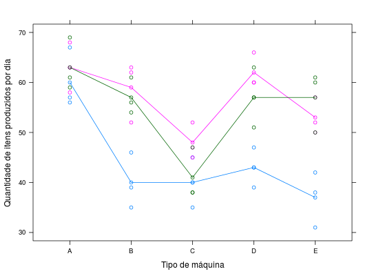

Os dados advém de um experimento no qual foram comparados cinco tipos de máquinas, operadas por três diferentes operadores (blocos). O objetivo era verificar a suspeita de que o tipo de máquina usada na fabricação de determinado item tem efeito sobre a quantidade de itens produzidos por dia em uma fábrica.
Os operadores foram tomados como blocos, pois já se sabia que existia diferença entre eles. Cada um deles trabalhou quatro dias em cada máquina (sorteadas aleatóriamente) e ao final de cada dia obteve-se a quantidade de itens produzidos por operador.
Um data.frame com 60 observações e 3 variáveis, em que
maquinablocoqtdVIEIRA (1999), Tabela 8.5, pág. 98.
library(lattice) data(VieiraTb8.5)#> Warning: data set ‘VieiraTb8.5’ not foundstr(VieiraTb8.5)#> 'data.frame': 60 obs. of 3 variables: #> $ maquina: Factor w/ 5 levels "A","B","C","D",..: 1 2 3 4 5 1 2 3 4 5 ... #> $ bloco : Factor w/ 3 levels "1","2","3": 1 1 1 1 1 2 2 2 2 2 ... #> $ qtd : num 56 46 40 47 31 63 52 52 66 57 ...xtabs(~bloco + maquina, data = VieiraTb8.5)#> maquina #> bloco A B C D E #> 1 4 4 4 4 4 #> 2 4 4 4 4 4 #> 3 4 4 4 4 4xyplot(qtd ~ maquina, group = bloco, data = VieiraTb8.5, type = c("p", "a"), ylab = "Quantidade de itens produzidos por dia", xlab = "Tipo de máquina")